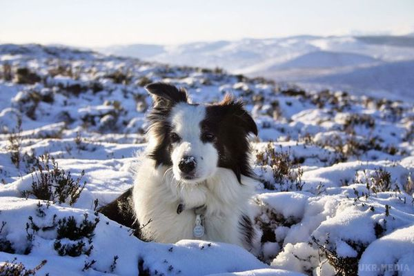

-

Бордер-коллі
Ці красені займають лідируючу позицію в рейтингу. Їх вивели для того, щоб випасати овець, змішавши різні види вівчарок. Якщо собаку цієї породи навчити, то вона також може стати поводирем для сліпих або відмінною сторожовим собакою. Коротше кажучи, практично на всі випадки життя.
-
Пудель
Не варто дивуватися. Це зараз їх частіше використовують в декоративних цілях, і вони нагадують (особисто мені) солодку вату. Насправді пуделя дуже розумні собаки. Деякі представники цієї породи використовуються для полювання на птахів, а більші навіть можуть стати відмінними охоронцями. А ще пуделя є чудовими плавцями і навіть можуть витягнути потопаючу людину...
-
Німецька вівчарка
Не буду довго розповідати про цю породу. Напевно всі дивилися фільми і серіали, де представники цієї породи виступали головними героями. Німецькі вівчарки можуть з однаковим успіхом бути охоронцями, поводирями і пастухами. Їх частіше за інших порід використовують для служби в армії, поліції або при охороні державних кордонів. А ще вони відмінно ладнають з дітьми.
-
Золотистий ретрівер
Породу виводили для апортировки дичини з води. Зараз же ці собаки відмінно підходять для великих сімей. Вони чудово знаходять спільну мову з дітьми. Золотистих ретриверів часто використовують в терапевтичних цілях. Ці собаки надзвичайно працездатні і дуже легко піддаються дресируванню. Загалом, вони по праву займають своє місце в нашій десятці.
-
Доберман-пінчер
Це службові собаки, яких вивели у Німеччині. Існує думка, що добермани дуже дурні, але насправді вона помилкова. Просто на їх тренування потрібно витратити більше часу і терпіння. Якщо добре постаратися, то своїми вміннями доберман може сильно здивувати.
-
Шотландська вівчарка
Шелті, або шотландська вівчарка, — це маленька коллі. Вони легко дресируються, але не люблять фамільярності. Ця собака насилу переносить незнайомців, бажаючих почухати за вушком. Якщо ти мрієш про коллі, але не заводиш її з-за розмірів, то подумай про шелті!
Взагалі виявилося, що рівень інтелекту середньостатистичної собаки зіставим з IQ 2-річної дитини. Особливо розумні можуть розуміти до 250 слів, а також здійснювати найпростіші математичні операції з цифрами до 5. Серед інших умінь собак вчені виділили орієнтування на місцевості і керування складними механізмами. А ще ці чотириногі здатні відчувати злість, радість і огиду. А ось з більш складними емоціями, наприклад, почуттям провини у собак не все так гладко. Викликати їх практично неможливо.
Вченими був складений рейтинг найрозумніших порід собак, який ми і хочемо сьогодні опублікувати.